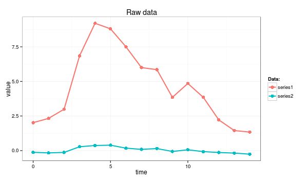
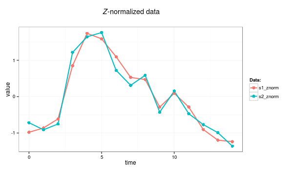

Z-normalization, also known as “Normalization to Zero Mean and Unit of Energy”, was first mentioned by Goldin & Kanellakis. The procedure ensures, that all elements of the input vector are transformed into the output vector whose mean is approximately 0 while the standard deviation is in a range close to 1. The formula behind the transform is shown below:
First, the time series mean is subtracted from original values, and second, the difference is divided by the standard deviation value. According to most of the recent work concerned with time series structural pattern mining, z-normalization is an essential preprocessing step which allows a mining algorithm to focus on the structural similarities/dissimilarities rather than on the amplitude-driven ones.
Note, however, that in some cases, this preprocessing is not recommended as it introduces biases. For example, if the signal variance is significantly small, z-normalization will simply overamplify the noise to the unit of amplitude. Yet another extreme case is when a time series contains the same values and the standard deviation is not defined.
An example below demonstrates the highly desirable property of z-normalization: whereas the raw time series look significantly different, their z-normalized versions are highly similar.
series1 <- c(2.02, 2.33, 2.99, 6.85, 9.20, 8.80, 7.50, 6.00, 5.85, 3.85, 4.85, 3.85, 2.22, 1.45, 1.34) series2 <- c(-0.12, -0.16, -0.13, 0.28, 0.37, 0.39, 0.18, 0.09, 0.15, -0.06, 0.06, -0.07, -0.13, -0.18, -0.26)

z-normalization can be coded as a simple R function:
znorm <- function(ts){
ts.mean <- mean(ts)
ts.dev <- sd(ts)
(ts - ts.mean)/ts.dev
}
s1_znorm=znorm(series1)
s2_znorm=znorm(series2)
